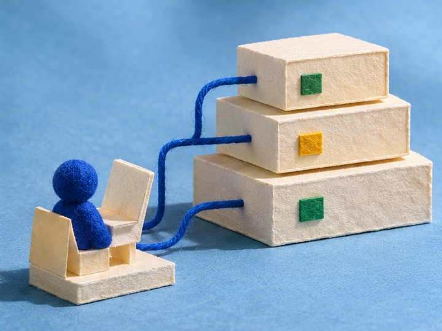

Teams & communities
Shared in practice
The work gives each agent its role. A community podcast and a team with its own runtime are two different starting points.

Community / Milo
A podcast with a shared agent.
Milo runs the AI Engineers Barcelona podcast. The show belongs to a community, and the agent’s role is tied to that ongoing work.

Team / Lola
A setup for Matt’s team.
Lola works on her own node with dedicated seats. Shared sets up the environment around the team’s workflow.
Other teams at work
Nando works with his crew. PRS is a paying client through MatchPASS.